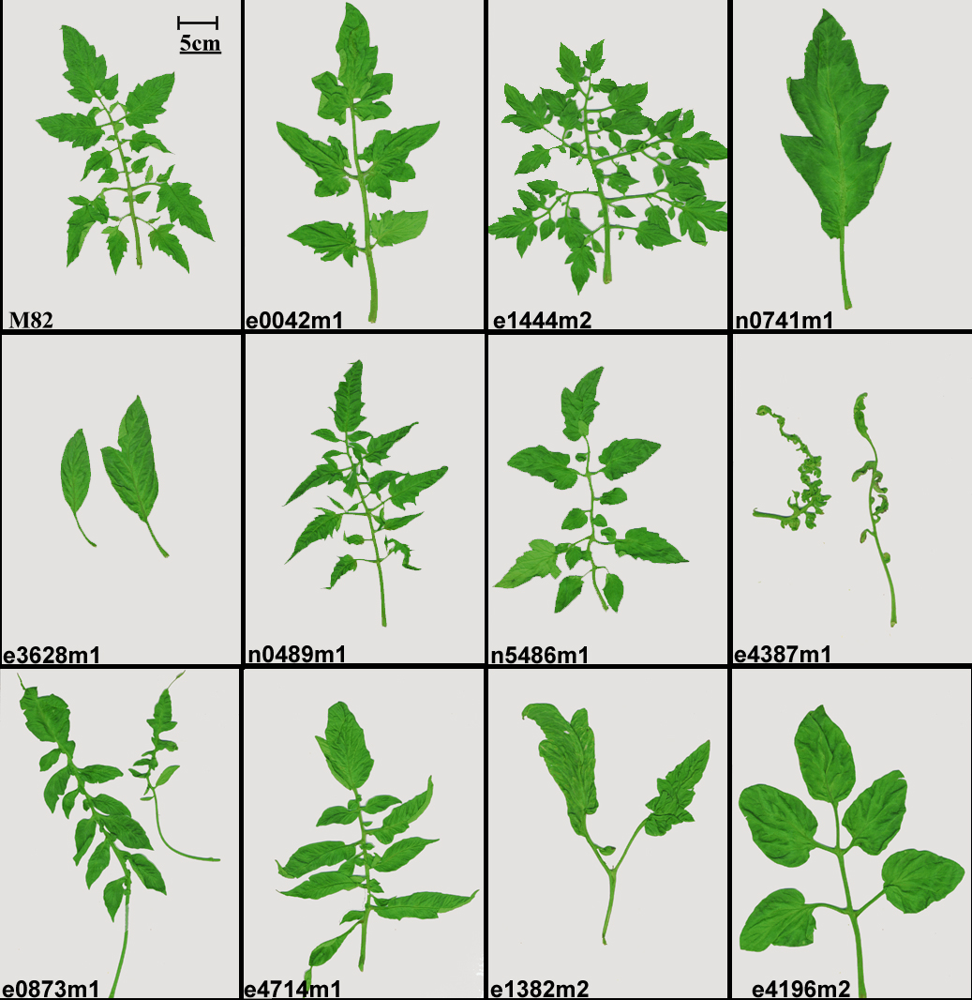
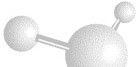

| |||
|
2004 version new features: - Search by gene name - Find alleles for your mutant - Over 500 accessions curated - Over 200 new photos |

Representing M82 leaf mutations |
||
|
Read here about the mutant population: In silico screening of a saturated mutation library of tomato. |
|||
 Email
your suggestions, questions or requests
Email
your suggestions, questions or requests
|  |
 |
||
| You are visitor number: | |||